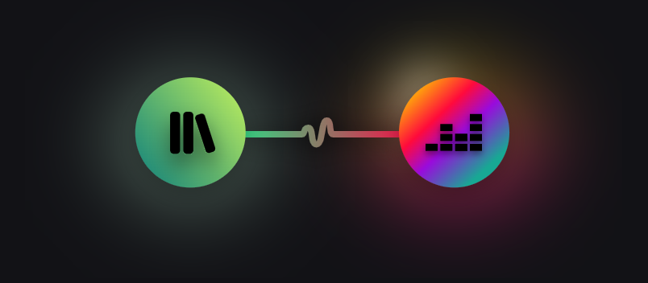

Transfiere toda tu biblioteca de música desde otro servicio de streaming de música a Deezer con un solo clic.

FAQ
¿Qué es Deezer?
>
Deezer es una app de streaming de música que te brinda acceso a más de 90 millones de canciones de todo el mundo y otras experiencias de audio como podcasts. También obtienes recomendaciones personalizadas y contenido exclusivo de Deezer Originals.
Escucha música en línea, colecciona tus canciones favoritas, crea playlists y compártelas con amigos. Todo gratis.
También puedes descargar toda tu música favorita y escucharla sin conexión con Deezer Premium, Deezer Family y otros planes.
¿Cuánto cuesta Deezer?
>
Deezer Free ofrece una experiencia de aplicación de música completamente gratuita. Si eliges una de nuestras ofertas de streaming de música de pago, puedes disfrutar de nuestras funciones avanzadas por tan sólo $17.900/mes. Aplican condiciones
¿Cómo uso Deezer?
>
Descarga la app en tu teléfono, tableta o computadora de escritorio y luego regístrate gratis. Una vez que hayas iniciado sesión en tu nueva cuenta, ¡podrás escuchar tu música favorita!
¿Cómo cancelo mi suscripción?
>
Puedes actualizar o cancelar una suscripción existente en cualquier momento, seleccionando "Administrar mi suscripción" en los Ajustes de tu cuenta.
¿Dónde puedo escuchar?
>
Deezer es compatible con computadoras de escritorio y la mayoría de los dispositivos móviles y tabletas. También es posible hacer streaming y transmitir desde determinados dispositivos para el hogar y altavoces. Puedes encontrar todos los dispositivos compatibles aquí.
Los usuarios con una suscripción de pago pueden escuchar música a donde vayan, descargando sus canciones y playlists favoritas.
Estas ofertas son sin compromiso, lo que significa que puedes cancelar tu suscripción en cualquier momento. Estas ofertas solo están disponibles para usuarios que no tengan actualmente o hayan tenido una suscripción previa a cualquier plan de Deezer, sin beneficios de cualquier promoción previa de Deezer y sin ninguna prueba gratis para cualquier suscripción de Deezer en algún momento. Estas ofertas no se pueden combinar con ninguna otra oferta. Estas son ofertas por tiempo limitado y solo son válidas para un usuario.